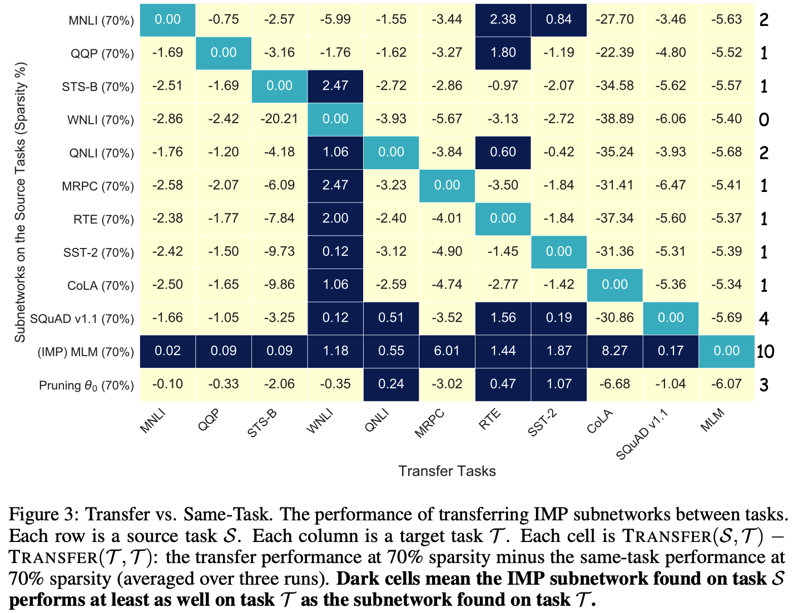
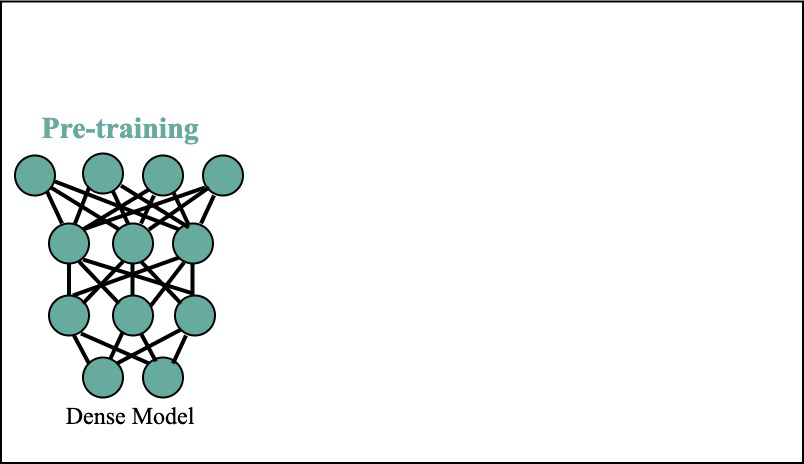
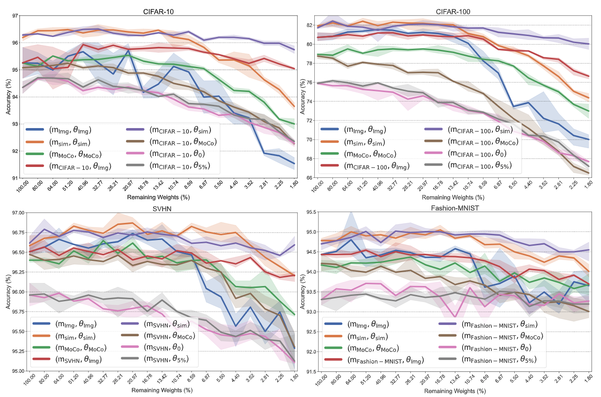
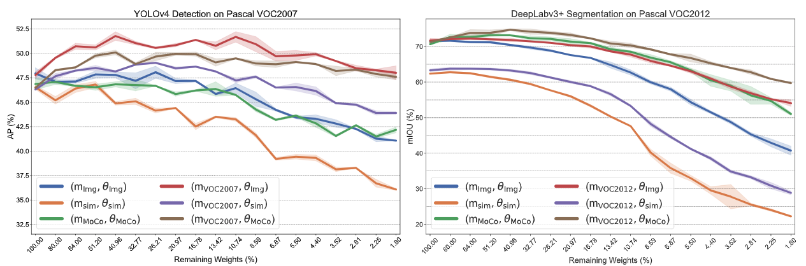
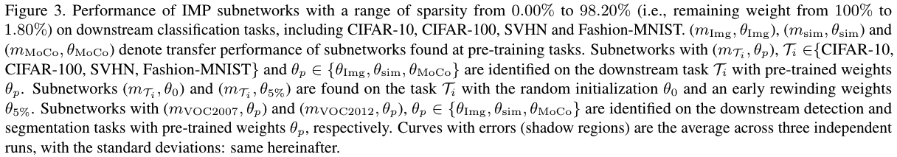

Universal Transferrable Tickets from Pre-training

Abstract: In natural language processing (NLP), enormous pre-trained models like BERT have become the standard starting point for training on a range of downstream tasks, and similar trends are emerging in other areas of deep learning. In parallel, work on the lottery ticket hypothesis has shown that models for NLP and computer vision contain smaller matching subnetworks capable of training in isolation to full accuracy and transferring to other tasks. In this work, we combine these observations to assess whether such trainable, transferrable subnetworks exist in pre-trained BERT models. For a range of downstream tasks, we indeed find matching subnetworks at 40% to 90% sparsity. We find these subnetworks at (pre-trained) initialization, a deviation from prior NLP research where they emerge only after some amount of training. Subnetworks found on the masked language modeling task (the same task used to pre-train the model) transfer universally; those found on other tasks transfer in a limited fashion if at all. As large-scale pre-training becomes an increasingly central paradigm in deep learning, our results demonstrate that the main lottery ticket observations remain relevant in this context.

Overview of our work paradigm: from pre-trained CV models (both supervised and self-supervised), we study the existence of matching subnetworks that are transferable to many downstream tasks, with little performance degradation compared to using full pre-trained weights. We find task-agnostic, universally transferable subnetworks at pre-trained initialization, for classification, detection, and segmentation tasks.
Abstract: The computer vision world has been re-gaining enthusiasm in various pre-trained models, including both classical ImageNet supervised pre-training and recently emerged self-supervised pre-training such as simCLR and MoCo. Pre-trained weights often boost a wide range of downstream tasks including classification, detection, and segmentation. Latest studies suggest that the pre-training benefits from gigantic model capacity. We are hereby curious and ask: after pre-training, does a pre-trained model indeed have to stay large for its universal downstream transferability?
In this paper, we examine the supervised and self-supervised pre-trained models through the lens of lottery ticket hypothesis (LTH). LTH identifies highly sparse matching subnetworks that can be trained in isolation from (nearly) scratch, to reach the full models' performance. We extend the scope of LTH to questioning whether matching subnetworks still exist in the pre-training models, that enjoy the same downstream transfer performance. Our extensive experiments convey an overall positive message: from all pre-trained weights obtained by ImageNet classification, simCLR and MoCo, we are consistently able to locate such matching subnetworks at 59.04% to 96.48% sparsity that transfer universally to multiple downstream tasks, whose performance see no degradation compared to using full pre-trained weights. Further analyses reveal that subnetworks found from different pre-training tend to yield diverse mask structures and perturbation sensitivities. We conclude that the core LTH observations remain generally relevant in the pre-training paradigm of computer vision, but more delicate discussions are needed in some cases.
  
@article{chen2021lottery,
title={The Lottery Tickets Hypothesis for Supervised and Self-supervised Pre-training in Computer Vision Models},
author={Chen, Tianlong and Frankle, Jonathan and Chang, Shiyu and Liu, Sijia and Zhang, Yang and Carbin, Michael and Wang, Zhangyang},
journal={arXiv preprint arXiv:2012.06908},
year={2021}
}
@inproceedings{chen2020lottery,
author = {Chen, Tianlong and Frankle, Jonathan and Chang, Shiyu and Liu, Sijia and Zhang, Yang and Wang, Zhangyang and Carbin, Michael},
booktitle = {Advances in Neural Information Processing Systems},
editor = {H. Larochelle and M. Ranzato and R. Hadsell and M. F. Balcan and H. Lin},
pages = {15834--15846},
publisher = {Curran Associates, Inc.},
title = {The Lottery Ticket Hypothesis for Pre-trained BERT Networks},
url = {https://proceedings.neurips.cc/paper/2020/file/b6af2c9703f203a2794be03d443af2e3-Paper.pdf},
volume = {33},
year = {2020}
}
Acknowledgments: TBD.